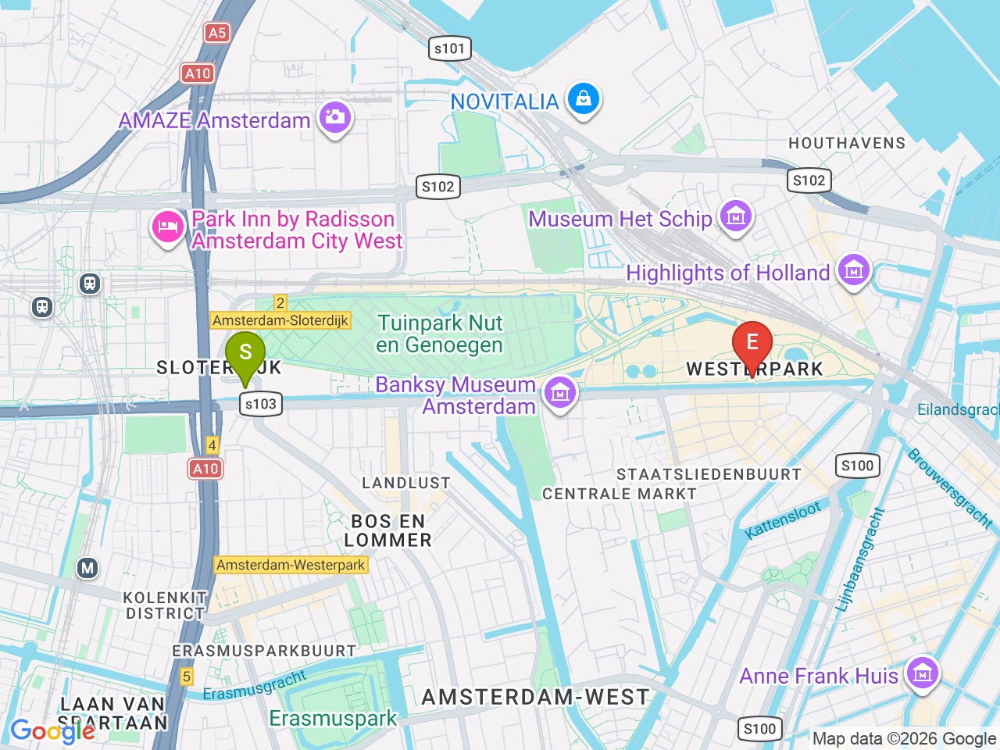
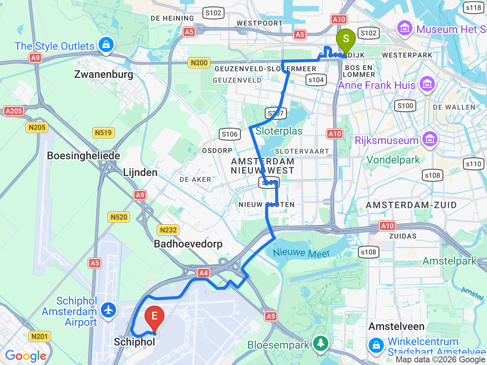

Day 06-1 · 2026-08-21（五）
荷蘭・阿姆斯特丹 Day 6/6
阿姆斯特丹賦歸：Westerpark 早晨 & 前往機場
退房前在飯店旁 Westerpark 悠閒早午餐，輕裝直達 Schiphol 銜接飛冰島航班
⏰目標 14:00 前抵達機場辦理登機/托運/安檢，17:05 起飛飛往 KEF，別逛過頭
飯店 & 早餐區域

飯店→機場

彈性探索景點DAY 06-1
| 地點 | 地點 (英文) | 預計停留(分鐘) | 價格 | 備註 |
|---|---|---|---|---|
| 早午餐：De Bakkerswinkel（Westergasfabriek） | ADe Bakkerswinkel Westergasfabriek, Amsterdam | 60 | 見上方三餐資訊 | 飯店步行10-15分鐘，Westerpark 內舊瓦斯廠改建的文青園區，輕裝前往，行李留在房間，約09:00起床、11:00退房 |
每日三餐
早餐
De Bakkerswinkel（Westergasfabriek）De Bakkerswinkel Westergasfabriek約 €10-15／人
📍 Polonceaukade 1, Amsterdam飯店步行10-15分鐘，Westerpark 內舊瓦斯廠改建的文青園區，早午餐氣氛悠閒